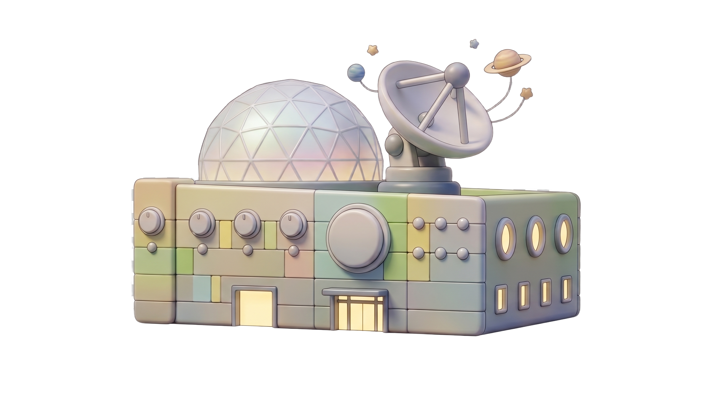

우주에서 온 신호를 해독하라!
📡 미션 수행 방법
1
QR 코드를 스캔하세요
우측 QR 코드를 스캔하여 우주정거장 통신망에 접속할 준비를 하세요!
2
TV에서 나오는 소리를 잘 들으세요
우주에서 보내온 모스부호 신호를 집중해서 들으세요. 짧은 소리(·)와 긴 소리(—)를 구별하는 것이 핵심이에요!
3
신호를 해독하세요
들은 모스부호를 알파벳으로 변환하여 정답 화면에 입력하고 우주정거장에 교신하세요!
4
인증서 및 체험권 획득
정답을 맞추면 해독 완료 인증서를 핸드폰으로 캡쳐하여 로비로 이동하여 체험부스 체험권을 획득하세요!
SCAN ME
